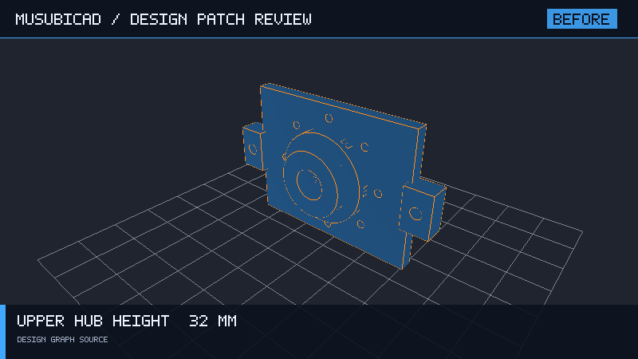
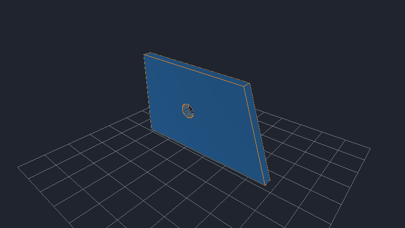

FORGECAD DESIGN REVIEW
Increase bracket width for a wider mounting pattern
The downstream enclosure requires 20 mm additional clearance.


Semantic and geometric diff
{
"diff_type": "semantic",
"summary": "param:width: 80 mm -> 100 mm",
"changes": [
{
"kind": "parameter_changed",
"id": "param:width",
"before": "80 mm",
"after": "100 mm"
},
{
"kind": "mass_changed",
"before": "76.50 g",
"after": "84.10 g"
}
],
"geometry": {
"volume_before": 0.00002833178323652379,
"volume_after": 0.00003114947927485105,
"mass_before": 0.07649581473861423,
"mass_after": 0.08410359404209784
}
}